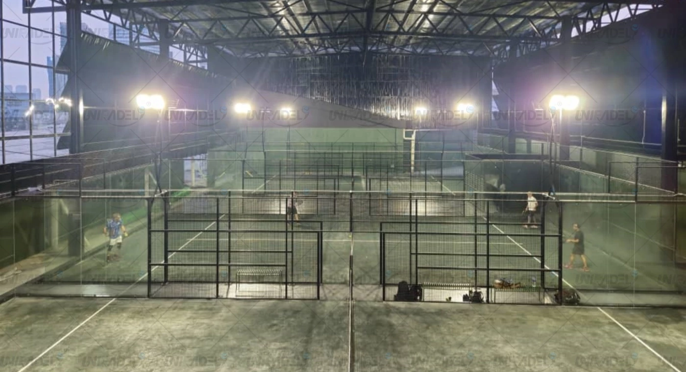

What does SPORTENVO supply?
FORCE-HX is SPORTENVO’s reinforced high-wind court configuration for exposed coastal and severe-weather project review.
HIGH-WIND COURT SYSTEM
Quick Answer: What is the FORCE-HX high-wind padel court? It is SPORTENVO's reinforced configuration for exposed coastal and high-wind projects, with a published 136.8 MPH design target and 200 × 200 × 6 mm main structure. These are configuration references, not a universal site rating; final wind loads, anchoring, foundation design and approvals require project-specific engineering.

Commercial Project Supply
Send the exact project location and court quantity first. We can review the FORCE-HX supply configuration, wind basis, structural interfaces, anchors, foundation load path and project-specific engineering inputs before quotation.
To start, send
Country / CityCourt QuantityIndoor / Outdoor
Get Project Quote Not sure which system? Use Project Configurator →System Overview
Heavy-duty padel court system engineered for coastal, hurricane-prone and high-wind environments.
The anti hurricane padel court is specified around venue use, local climate, ground conditions and the confirmed commercial brief. Final structural and foundation requirements remain project-specific.
Commercial Snapshot
A fast procurement view for exposed coastal and high-wind projects where the reinforced court configuration is only the starting point for site-specific engineering.
Last updated: September 30, 2026. Published FORCE-HX values are reference configuration data for procurement and engineering discussion. They do not replace local wind criteria, structural calculations, foundation design or project approvals.
| Best fit | Coastal sites, exposed rooftops and high-wind regions requiring reinforced court-system review. |
|---|---|
| Reference specs | 200 × 200 × 6 mm reinforced main structure; 50 × 50 × 4 mm welded mesh; 12 mm tempered glass; 12 mm turf reference configuration. |
| Wind reference | 136.8 MPH published reference design target for the documented configuration; not a universal site rating or automatic local approval. |
| Site requirements | Exact location, wind criteria, terrain / exposure, anchors, foundation load path, corrosion environment, roof condition and local engineering requirements. |
| Supply scope | Reinforced court configuration, confirmed components, technical drawings, project engineering inputs, export packing and installation guidance. |
| Buyer provides | Exact project location, court quantity, site elevation / exposure, local wind basis if available, foundation information and approval requirements. |
| Related guide | High-Wind Padel Court Engineering Guide → |
Buyer Search Answers
Commercial buyers should compare the reinforced structural configuration, design assumptions, foundation load path and engineering boundary—not only a headline wind-speed figure.
FORCE-HX is SPORTENVO’s reinforced high-wind court configuration for exposed coastal and severe-weather project review.
136.8 MPH for the documented FORCE-HX configuration, together with a 200 × 200 × 6 mm main structure reference.
Local wind criteria, site exposure, anchors, foundation reactions, corrosion protection, engineering standards and approvals.
Exact location, court quantity, terrain / exposure, local wind basis if available, roof condition, foundation information and approval requirements.
Key Considerations
Technical & Procurement Summary
FORCE-HX is the SPORTENVO reinforced configuration for exposed coastal and high-wind sites. The published product configuration is a starting point; final suitability remains location- and project-specific.
| Main structure | 200 × 200 × 6 mm reinforced main steel structure |
|---|---|
| Published design target | 136.8 MPH reference target for the documented FORCE-HX configuration; not a universal site approval |
| Mesh | 50 × 50 × 4 mm welded mesh reference configuration |
| Glass | 12 mm tempered glass |
| Artificial turf | 12 mm padel turf reference configuration |
| Lighting | Commercial LED lighting; final fixture and electrical scope confirmed in quotation |
| Foundation | Foundation reactions and anchoring must be checked against site exposure, ground / building structure and local engineering requirements |
| Project inputs | Exact location, site elevation, terrain / exposure, local wind basis, court quantity, roof condition if any, foundation information and local approval requirements |
Buyer FAQ
No. FORCE-HX is SPORTENVO’s reinforced high-wind configuration. The published reference target does not replace location-specific structural review, local wind criteria, foundation design or approvals.
It is a published reference design target for the documented FORCE-HX configuration. It should not be interpreted as automatic compliance for every coastal or hurricane-prone site.
Wind actions are transferred through the court structure and anchors into the foundation or supporting building. The load path must be coordinated as one system rather than treating the court and foundation separately.
Provide the exact location, site elevation, terrain and exposure, local design wind basis if available, court quantity, roof condition, foundation information and any local engineering or permit requirements.
Potentially, but rooftop use requires additional review of the existing building structure, anchoring zones, drainage, lifting access and elevated wind exposure. Building suitability must be confirmed by the project engineering team.
No. Compare the structural sections, connection details, mesh and glass configuration, anchors, corrosion protection, foundation reactions, engineering documents and the assumptions behind the stated design basis.
Project Fit
FORCE-HX is a reinforced high-wind project direction. It is not a universal approval and should be selected only after reviewing location, exposure, anchoring and foundation requirements.
High-Wind Site Intake
The 136.8 MPH figure is a reference target for the documented FORCE-HX configuration. A commercial high-wind review starts with the site, exposure and load path before the final court, anchors or foundation are confirmed.
Send country, city and site address or coordinates to establish the applicable local wind and approval basis.
Identify open coast, island, urban, sheltered, hillside or other exposure conditions. The same regional wind speed can produce different project demands.
For rooftop projects, provide building information and available structural zones. Elevated exposure, anchoring and existing-building capacity require separate review.
Share slab, soil or proposed foundation information so the court-to-anchor-to-foundation load path can be checked as one system.
Confirm distance from the sea and expected salt / humidity exposure so coating, maintenance and component protection can be discussed.
Provide local wind criteria, code requirements or engineer / authority comments when available. Project approval remains local and site-specific.
| Use 136.8 MPH for | A reference point when discussing the documented FORCE-HX reinforced configuration and whether it is an appropriate starting direction for project engineering. |
|---|---|
| Do not use it for | Automatic code compliance, universal hurricane certification, foundation sizing, rooftop approval or a guarantee that one configuration suits every exposed site. |
| Before production | Confirm the applicable wind basis, structural configuration, connections, anchors, foundation load path, corrosion-protection scope and responsibility for local engineering / approvals. |
Coastal Project Context
Project references help buyers understand venue context, corrosion exposure, logistics and operating conditions. Final wind loads, anchors and foundations still require site-specific review.
Verification & Project Support
Use the quality, engineering and project-reference pages to verify the specification, manufacturing process, documentation and delivery scope before the final order is confirmed.
Commercial Project Path
Use the commercial project page to compare court, foundation, weather protection, supplier scope and project inputs before requesting the final quotation.
High-Wind System Video
Watch a short SPORTENVO overview of the reinforced FORCE-HX padel court system for selected coastal and high-wind commercial projects, with structure, mesh, glass and foundation interfaces reviewed as one project scope.
Procurement Resources
Use the buyer guides and project references to check the site, scope and commercial assumptions before the final system is confirmed.
Related Systems
Project Review
Use the configurator for location, exposure, foundation and anchoring inputs, or use the RFQ tool to compare reinforced-system scope without relying on marketing labels.
Final suitability remains project-specific and depends on local wind criteria, anchors, foundations, exposure and approvals.